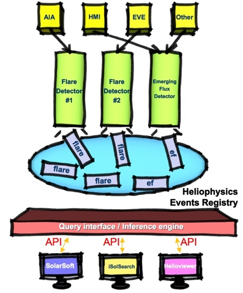
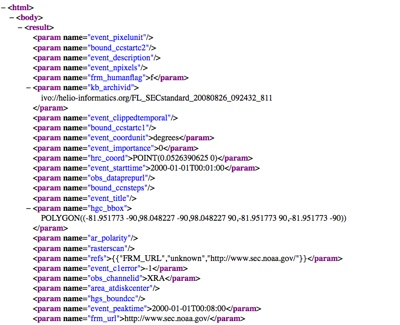
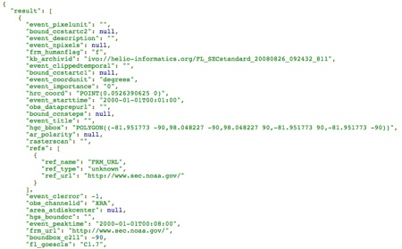

HEK: Heliophysics Events Registry Web API¶
Introduction¶
{kind=link}
Both Solarsoft and the iSolSearch web application lets users query the Heliophysics Events Registry (HER) in an interactive manner (much like Google Maps). iSolSearch interacts with HER by means of our web application programming interface (API). The API enables developers to create new third party clients for HER as well as scientists to write software code which interact with HER in an automated manner.
Querying the Heliophysics Events Registry¶
Usage of an API function amounts to using HTTP to fetch a web document. The base url for all API calls is (including the question mark):
http://www.lmsal.com/hek/her?
Following the url base, one can append a list of keywords to specify the type of command and options for that specific command.
Simple Search for Features/Events in HER¶
To do a simple search for Features and Events in HER, one must append to the base url:
cmd=search&type=column
In addition to the command (cmd), one must specify which event type to search for. For all event types, use **:
cmd=search&type=column&event_type=**
For some but not all event types, use a comma delimited list of two-letter abbreviations (see http://www.lmsal.com/hek/VOEvent_Spec.html for full list of event types). E.g. the following specifies that one wishes to search for active regions, flares and emerging flux regions:
cmd=search&type=column&event_type=ar,fl,ef
One must also provide a time window using event_starttime and event_endtime:
cmd=search&type=column&event_type=ar,fl,ef&event_starttime=2007-04-29T00:00:00&event_endtime=2007-05-07T00:00:00
Only entries with duration fully contained within this time will be returned.
The spatial region must also be specified. At present, we support searches by helioprojective (from Earth’s perspective, in arcseconds from disk center), Stonyhurst (longitude measured from central meridian and latitude in degrees) and Carrington (longitude and latitude in degrees). Let (x1,y1) and (x2,y2) be the lower-left and upper-right coordinates of a bounding box respectively. To get everything within the disk, it suffices to specify:
cmd=search&type=column&event_type=ar,fl,ef&event_starttime=2007-04-29T00:00:00&event_endtime=2007-05-07T00:00:00&event_coordsys=helioprojective&x1=-1200&x2=1200&y1=-1200&y2=1200
To specify a bounding box in Stonyhurst coordinates, give the bounding longitude and latitude in degrees. For the full sphere, do:
cmd=search&type=column&event_type=ar,fl,ef&event_starttime=2007-04-29T00:00:00&event_endtime=2007-05-07T00:00:00&event_coordsys=stonyhurst&x1=-180&x2=180&y1=-90&y2=90
To get query results in XML form, set cosec=1. To get JSON, set cosec=2 (this setting is needed for iSolSearch to render the results properly).
The query for this example with JSON output would then be:
http://www.lmsal.com/hek/her?cosec=2&cmd=search&type=column&event_type=ar,fl,ef&event_starttime=2007-04-29T00:00:00&event_endtime=2007-05-07T00:00:00&event_coordsys=helioprojective&x1=-1200&x2=1200&y1=-1200&y2=1200
To show the search results in iSolSearch, simply point your browser to the iSolSearch link with and passing the full query as a hek_query parameter. For instance, click here. Please note that iSolSearch requires cosec=2 type (JSON) format. Useful tools for inspecting JSON documents on the web are the Firefox Add-Ons JSONovich https://addons.mozilla.org/en-US/firefox/addon/10122 and JSONView https://addons.mozilla.org/en-US/firefox/addon/10869 (this one is recommended).
Customizing Searches with Filters¶
Searches can be customized with filters based on keywords. For a list of keywords/parameters for the various event and feature types, see http://www.lmsal.com/hek/VOEvent_Spec.html. A filter is a triplet consisting of the Parameter name (param), the comparison operation (op) and a value (value).
Filters on attributes of type string¶
Suppose you wish to search for all events submitted by a particular Feature Recognition Method (FRM; could be person or a software code). The API allows you to specify the FRM_Name as a string. At present the API supports seven comparison operations for strings, namely =, != >, <, >=, <= and like.
Greater than or less than operations on string values refers to alphabetical ordering.
To specify the exact FRM_Name, simply append the following string to the query url:
¶m0=FRM_Name&op0==&value0=Karel%20Schrijver
The example above tells the API to limit results to those with FRM_Name matching Karel Schrijver. The strange looking string %20 is simply the url-escaped code for a whitespace.
Instead of specify the exact string, one can also use a wildcard. For instance, if you wish to search for entries in the registry submitted by FRM’s with first name equal to Karel, use the like operator with a ‘%’ sign as a wildcard after Karel:
¶m0=FRM_Name&op0=like&value0=Karel%25
The string %25 is simply the url-escaped code for a percent sign.
To add a second filter, simply define another triplet. This time, the number after param, op and value is 1:
¶m0=FRM_Name&op0==&value0=Karel%20Schrijver¶m1=OBS_Observatory&op1==&value1=TRACE
These two filters limit search results to those events/features reported by Karel Schrijver using data from the TRACE observatory.
The full query url for a search with these two filters for the time period October 2003 is then:
http://www.lmsal.com/hek/her?cosec=2&cmd=search&type=column&event_type=ar,fl,ef&event_starttime=2003-10-01T00:00:00&event_endtime=2003-11-01T00:00:00&event_coordsys=helioprojective&x1=-1200&x2=1200&y1=-1200&y2=1200¶m0=FRM_Name&op0==&value0=Karel%20Schrijver¶m1=OBS_Observatory&op1==&value1=TRACE
To see the results in iSolSearch, click on this link
To find Flares with GOES class X and above, use this filter:
¶m0=FL_GOESCls&op0=%3E&value0=X
The string %3E is the url-escaped code for the > character.
Filters on attributes of type boolean¶
The API supports the equality (=) and inequality (!=) logical operations on attributes of type boolean.
E.g., for attributes such as FRM_HUMANFLAG, one should set op0== and value0=true. Note that value0=t will not work if you want to get HER entries with true values for a particular boolean attribute.
Filters on attributes of type integer/float¶
The API supports six comparison operations for such attributes, namely =, !=, >, <, >= and <=. For example, to get Active Regions with NOAA number between 10930 and 10934 (inclusive), use the following filter:
¶m0=AR_NOAANum&op0=%3E=&value0=10930¶m1=AR_NOAANum&op1=%3C=&value1=10934
One can learn to add filters to queries in iSolSearch by click on the Filters tab.
Event Type Specific Filters¶
The API also supports filtering results based on only some of the event types selected. This allows the user to use a different value per event type if so desired, rather than the same value for all event types requested. Please ensure that the event type you are filtering off is in the list of event types you are requesting, or that event_type*=*. If not, an error will be returned. Suppose one wants active region (ar), coronal mass ejection (ce), coronal hole (ch) and coronal jet (cj) events returned but with coronal holes that are greater than 10000 Mm2 (areas are stored in km2), one could use the following:
cmd=search&type=column&event_type=ar,ce,ch,cj,&event_region=all&event_coordsys=helioprojective&x1=-5000&x2=5000&y1=-5000&y2=5000&result_limit=40&event_starttime=2003-10-01T00:00:00&event_endtime=2003-11-01T00:00:00¶m0=ch.area_atdiskcenter&op0=>&value0=1e10
Only coronal holes that have the area_atdiskcenter value greater than 10000 Mm2 will be returned, while for the other event types, all events within the stated start/end time and region will be returned. Please note that if a filter parameter is given without specifying a particular event type, then it will be applied to all event types requested. Also, if only one event type is selected, there is no need to specify the event type when entering filter parameters.
Maximum number of returned results¶
By default the maximum number of results given a query is 100. To change this limit, set:
result_limit=Num
where Num is the maximum number of results to return. There is a currently a hard limit of 1000 results. In other words, specifying a value of 1500 will return 1000 results maximum. The results are returned sorted in chronological order (ascending, based on event_starttime). To avoid unreasonably time-consuming requests from hoarding API resources, a search will timeout after 60s. In that case, please breakup you query into small chunks and perform searches incrementally.
Sorting Result¶
By default the results are sorted by event_starttime in an ascending order. To change these, set:
sort_by=value sort_order=order
where value is the valid field name by which you’d like to sort and order is either ASC or DESC. One or both of these can be omitted, in which case the defaults will be used.
Result Pagination¶
The number of results returned depend on the value for result_limit. To request additional results, set:
page=page_number
where page_number is the integer page number that the user would like. When used it conjunction with result_limit, one can request events in smaller chunks, or simply get around the hard maximum that is imposed on a single query. If there are additional results, overmax will be set to true. When the last page is reached, overmax will be set to false. The default is to return the first page.
Output format of queries¶
To get query results in XML form, include the string &cosec=1 in the query url. To get JSON, use &cosec=2.
The xml output is looks like this:
{kind=link}
The JSON output looks like this:
{kind=link}
If JSON output is requested, an optional parameter can be specified in the url to wrap the JSON with a call to a Javascript callback function. For instance, suppose the web client you are developing requests JSON from HER. If you want to handle the JSON with some function, say it’s named processJSON, then simply provide the optional parameter ‘callback=processJSON’ in the query url. With this option, the output will have the string processJSON( ); wrapped around the JSON.
Note about Bounding Chaincodes¶
When an event/feature such as a Coronal Hole is imported into the HER, its bounding chaincode (if available) is converted into Heliographic Carrington, Heliographic Stonyhurst and Helioprojective coordinate systems irrespective of the original coordinate system in which the event coordinates are given. When a HER query is returned, the default JSON and/or XML output provides the bounding chaincodes as the following attributes:
HGS_BOUNDCC, HGC_BOUNDCC, HPC_BOUNDCC, HRC_BOUNDCC,
corresponding to the HGS (Heliographic Stonyhurst), HGC (Heliographic Carrington), HPC (Helioprojective Cartesian) and HRC (Helioprojective Radial + Position Angle) coordinate systems respectively. In all four cases, the attribute will contain a text string in the format:
''POLYGON((x0 y0, x1 y1, ... , xn yn))''
where the coordinate pairs are delimited by commas. For HGS, the x and y coordinates correspond to distances from disk center (from the Earth’s perspective) in arcsec. For HGS and HGC, the x and y coordinates correspond to latitude and longitude in degrees. For HRC, the x and y coordinates correspond to radius (in units of the solar radius) and positive angle (in deg, measured counterclockwise from the north).
Viewing Test Events¶
For internal testing purposes, fake test events are regularly generated. To view these, one can add the following string to the url, where value is one of the following:
hide |
show only non-test events (default) |
only |
show only test events |
show |
show both test and non-test events |
&showtests=value
Returning a limited subset of parameters¶
By default, search results contain information about all the parameters that are either required or optional. If only most basic (required) parameters are needed, one can add the following string to the url:
&return=required
Additionally, one can specify a comma delimited list of parameters to be returned. The list of accepted parameters can be found on the Knowledgebase Feature And Event Definitions page. Additionally, if references are desired, one can pass “refs” in the parameter list. Please note that a comma delimited list of parameters cannot be mixed with “required” or “optional”. If these are mixed, only the valid parameters in the comma delimited list will be returned. Thus, one essentially has four choice:
All - omit &return
Required - &return=required
Optional - &return=optional
List of parameters - &return=param1,param2,param3,…
All values passed are case insensitive. The following is an example of using a comma delimited list of parameters:
&return=kb_archivid,hpc_x,hpc_y,refs
Containment search¶
This search function allows the user to find events which a located within another event (both in time and space). Suppose you want to find Active Regions inside Coronal Holes. In order to do this, set:
cmd=search&type=contains
in the query url. This tells the API that you want to do a containment search instead of a ‘column’ type search (examples in previous sections). In the url, set:
event_type1=ar&event_type2=ch
and as usual, specify the event_starttime and event_endtime parameters. An example of an AR-in-CH search is:
http://www.lmsal.com/hek/her?cosec=2&cmd=search&type=contains&event_type1=ar&event_type2=ch&event_starttime=2003-10-23T00:00:00&event_endtime=2003-10-29T00:00:00
Clickable link for the JSON is here. To render these results in iSolSearch, click here.
An example of an FL-in-CH search (for the same time period) is:
http://www.lmsal.com/hek/her?cosec=2&cmd=search&type=contains&event_type1=fl&event_type2=ch&event_starttime=2003-10-23T00:00:00&event_endtime=2003-10-29T00:00:00
Clickable link for the JSON is here. To render these results in iSolSearch, click here.
The exact mechanics of the containment search are as follows:
Find events of event_type1 and event_type2 that are completely contained within the time period between event_starttime to event_endtime. A default tolerance of 8 hours is used so that if event1 has an event_starttime within 8 hours of the event_starttime of event2, they are considered to be cotemporal.
If event_type2 has a bounding polygon (e.g. Coronal Holes have CH boundaries), then find events of event_type1 whose central coordinate position (in Carrington coordinates) lies within the bounded area of instances of event_type2. Although temporal overlap is not strictly enforced, the instances of event_type1 and event_type2 must occur sufficiently close in time.
If event_type2 does not have a bounding chaincode, use the bounding box coordinates (Carrington) to define a polygon that acts as a proxy for its bounding chaincode.
The JSON (for cosec=2) output returned provides instances of event_type1 and event_type2 that satisfy the search criteria in an array called ‘results’ (same format as output for simple queries). Furthermore, the relations between the returned events are given as an array called ‘associations’. Each element in the ‘associations’ array contains information about the event types as well as their VOEvent IVORNs (unique labels for VOEvents). The ‘results’ and ‘associations’ arrays can be respectively thought of as nodes and edges of a graph.
Temporal Overlap Search¶
The default search behavior returns events that partially overlap the time interval between event_starttime and event_endtime. To find events that only are strictly contained in the time interval, append the argument:
&temporalmode=strict
This is a simpler query so it may run a bit faster.
Summary Page of a HER Event/Feature¶
Each event/feature in HER has a unique label, which is also known as its VOEvent IVORN (look for kb_archivid parameter in the search results output). Let says, an entry has an kb_archivid of ivo://helio-informatics.org/FA1550_YingnaSu_20090415_154655. To view the summary page of the event, set:
cmd=view-voevent&ivorn=ivo://example-ivorn
Following is an actual example:
http://www.lmsal.com/hek/her?cmd=view-voevent&ivorn=ivo://helio-informatics.org/FA1550_YingnaSu_20090415_154655
Clickable link is here.
Retrieving the VOEvent XML of a HER Event/Feature¶
To get the VOEvent XML of an entry, use the link:
http://www.lmsal.com/hek/her?cmd=export-voevent&cosec=1&ivorn=ivo://helio-informatics.org/FA1550_YingnaSu_20090415_154655
where the value of ivorn is the parameter given as ‘kb_archivid (look for it in the search results output).
Authentication and Post-authentication Methods¶
All services that permanently edit the knowledgebase require authentication via your Heliophysics Knowledgebase (HPKB) account. To register for an account, go to http://www.lmsal.com/hpkb/Nav and click on Registration.
Login¶
Login is done via an HTTPS POST request, and session is maintained via an HTTP cookie. Make sure the command line tool curl (http://curl.haxx.se/) is installed. The login can be accomplished via:
curl -k -c /Users/home/cookiemonster/cookiejar.txt -d username=YourUsername -d password=YourPassword -d cmd=login -d cosec=1 https://www.lmsal.com/hek/her/heks
In order for a cookie to be retrieved, be sure to use cosec=1. NOTE: Please ensure the directory /Users/home/cookiemonster/ exists or use another directory with appropriate write privileges. The cookiejar.txt file will be created only if the directory already exists.
The previous call will return either a “login failure” or a “login success” message. Once you are logged in, you can use any of the services below as long as you send the cookie received after login (in this example, /Users/home/cookiemonster/cookiejar.txt).
All of them operate on HTTPS POST. For example, a comment can be added via:
curl -k -b /Users/home/cookiemonster/cookiejar.txt -d cmd=comment -d ivorn=TARGET_EVENT_IVORN -d comment=YOUR_COMMENT -d cosec=2 https://www.lmsal.com/hek/her/heks
Rating Events¶
To rate an event, use:
https://www.lmsal.com/hek/her/heks?cmd=rate&ivorn=event_ivorn&rating=XXX&cosec=2
where event_ivorn is the ivorn of the event you wish to rate, and XXX is the rating, a number between 0 and 1. The output is returned in JSON format, with the “status” parameter indicating “success” or “permission denied”. The user must be logged in to use this command. A user may rate an event multiple times but can only have one rating per event - multiple submissions will overwrite each other. One can use the id of the event instead of the ivorn if so desired by using idspecial=id_of_event. Also, one can specify a particular revision by adding revision=revision_number.
Commenting on Events¶
To comment on an event, use:
https://www.lmsal.com/hek/her/heks?cmd=comment&ivorn=event_ivorn&comment=XXX&cosec=2
where event_ivorn is the ivorn of the event you wish to rate, and XXX is the comment. The output is returned in JSON format, with the “status” parameter indicating “success”, “permission denied”, or “error”. The user must be logged in to use this command. Also, one can retrieve the existing comments by using the same url, without the comment parameter. The user does not need to be logged in to retrieve comments. One can use the id of the event instead of the ivorn if so desired by using idspecial=id_of_event. Also, one can specify a particular revision by adding revision=revision_number.
Adding a reference to an event¶
To add a reference to an event, use:
https://www.lmsal.com/hek/her/heks?cmd=add-reference&ivorn=event_ivorn&name=XXX&type=YYY&url=ZZZ&cosec=2
where event_ivorn is the ivorn of the event you wish to rate, XXX is the reference name, YYY is the reference type, and ZZZ is the reference URL. The output is returned in JSON format, with the “status” parameter indicating “success”, “permission denied”, or “error”. The user must be logged in to use this command. One can use the id of the event instead of the ivorn if so desired by using eventid=id_of_event. Also, one can specify a particular revision by adding revision=revision_number.
Uploading an event to the registry¶
Uploading via the web interface is also done via a multipart HTTPS POST to https://www.lmsal.com/hek/her/voeupload with the uploadedFile parameter set to the contents of the file.
Example
The following is an example of a Flare VOEvent XML http://www.lmsal.com/hek/her?cmd=export-voevent&cosec=1&ivorn=ivo://helio-informatics.org/FL_SSWLatestEvents_20090704_053406_gev_20090704_0246_V1p0
Download it and modify some of the fields (e.g. FRM_Name, FRM_Contact, FRM_Institute etc). Suppose the file is saved as Test.xml. Now try to upload it with the following curl command:
curl -k -b /Users/home/cookiemonster/cookiejar.txt -F uploadedFile=@Test.xml https://www.lmsal.com/hek/her/voeupload
Upon successful import, you will get the message “Successfully imported XML”. If you now go to http://www.lmsal.com/hek/her?cmd=home, you should see your new submission.
For details about the VOEvent XML specification for the Heliophysics Events Knowledgebase, go to http://www.lmsal.com/helio-informatics/hpkb/voevent.html. The full list of VOEvent types and attributes can be found at http://www.lmsal.com/hek/VOEvent_Spec.html.
Posting a revised event to the registry¶
Revising an event via the web interface is also done via a multipart HTTPS POST to https://www.lmsal.com/hek/her/voerevise with the uploadedFile parameter set to the contents of the file.
Make sure that Event_IVORN of the revising XML matches the Event_IVORN of the entry to be revised.
Reporting relations between events/features¶
Relations between existing entries in HER can be reported. All relations are of the form:
A v B
where A and B are events/features (e.g. ARs, FLs etc) and v is a verb indicating the relation between A and B. The following verbs are allowed:
Verb |
Meaning |
Restrictions |
|---|---|---|
causes |
There is a physical causal relation between A and B with the former as the cause of the latter. |
|
contains |
The feature/event B is spatially and temporally contained within A. |
Only ARs with larger (longer) spatial (temporal) extent can contain other ARs. Sunspots cannot contain other events/features. |
is_associated_with |
A is associated with B. |
|
splits_into |
A splits into B |
|
merges_into |
A merges into B |
|
is_followed_by |
A is followed by B |
Users can report relations with the verbs causes and is_associated_with. For example, a researcher who has published a paper establishing the causal relationship or association between an Emerging Flux event and a Filament Eruption event can submit the relation EF causes FE. If the causal relationship was determined to be tentative, the relation EF is_associated_with FE should be used instead.
Relations using the verb contains are not to be submitted by users since HER already has the temporal and spatial information to determine/test these relationships. Since these two types of relations are rather commonplace, the cost of storage of all relations of these types will likely be too expensive (relative to testing the relations on the fly). In some case, however, it may be worth storing such relations. For example, it may be worth storing results of the complex query “Find ARs in CHs”.
To report an edge, you must provide both IVORNS for A and B (labeled ‘ivorn1’ and ‘ivorn2’ in the URL), edge_type (must be a “verb” from the above list).
Optionally you may provide edge_strength (a real number in [0,1]). You may omit it (assumes a strength of 1, which is how the splits, merges, follows relations from automated methods are generally done).
Examples:
https://www.lmsal.com/hek/her/heks?cosec=2&cmd=create_edge&ivorn1=ivo://helio-informatics.org/AR_SPoCA_20140508_034716_20140508T032848_5&ivorn2=ivo://helio-informatics.org/AR_SPoCA_20140508_074820_20140508T072848_4&edge_type=is_followed_by&edge_strength=0.9
or using curl:
curl -k -b /tmp/cookiejar.txt -d cmd=create_edge -d cosec=2 -d "ivorn1=ivo://helio-informatics.org/AR_SPoCA_20140508_034716_20140508T032848_5&ivorn2=ivo://helio-informatics.org/AR_SPoCA_20140508_074820_20140508T072848_4&edge_type=is_followed_by" https://www.lmsal.com/hek/her/heks